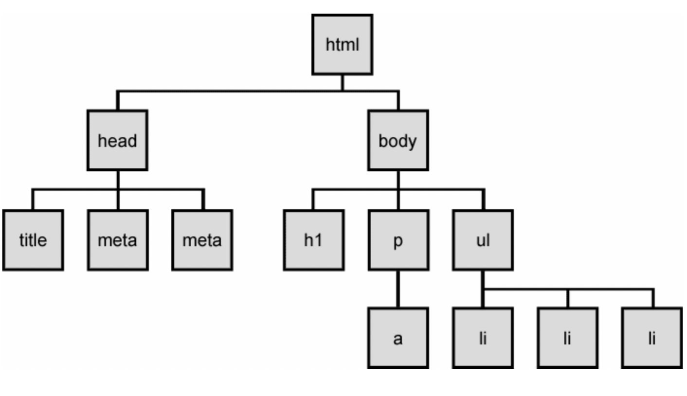
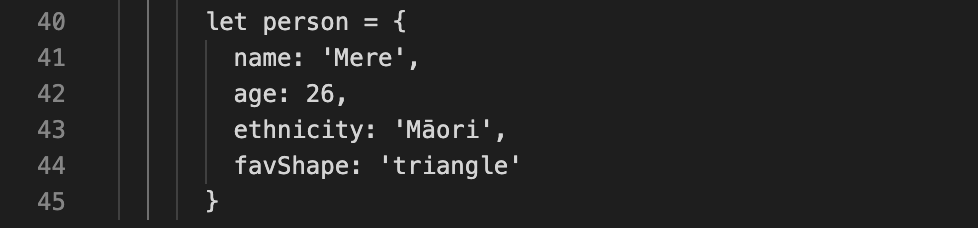
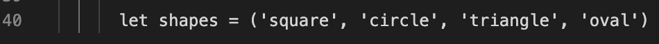

Sprint 3: Javascript Fundamentals.
WHAT THE HECK IS ALL THIS?

Let’s think of this in terms of NZ’s favourite supermarket: Pak n Save. HTML is the actual store, the building and all of the things inside it. CSS is everything that makes the store look the way it does, the layout. Everything from the paint on the building, the layout of the aisles, the arrangement of products on the shelves and where the checkouts are located. Javascript is the operations of the store, the employees and self-checkouts that allow you as a customer to go inside and buy things.

In Javascript, control flow describes the order in which your computer reads and executes the code: from top to bottom. It reads from the first line down to the last. Much like a recipe, starting with the first step and finishing with the last step.
Loops are a piece of code that are designed to repeat something again and again until they are told to stop. Take folding washing for example, a loop will tell the computer to continue folding each piece of clothing until all the clothes are folded. It will take each piece of clothing and fold it over and over again until all the washing is done! Haha imagine if we could run loops in real life like that – I’d be amazing.
The DOM (Document Object Model) is an API (Application Programming Interface) that allows you to use Javascript to make changes to your webpage including your HTML and CSS. It links your Javascript and HTML together helping you turn boring webpages into dynamic ones.
The DOM is displayed in a family tree like form and gives you access to every single thing that is on your webpage. You can then use Javascript to edit these items or make them interactive (if this happens --> I want this to happen).
Objects and Arrays are just two ways of collecting and storing data within your code.
Objects store data using a key and a value and pairs them together (called key-value pairs, funny that). The pairs aren’t stored in any particular order. You can access the data by using the it’s key.
Arrays store the data in an ordered collection. The data is then accessed by knowing and using the piece of data’s position within the collection.
Think about what your data represents. If it is a group of data about the same thing or if the order of the data is important, then you’ll likely want an array. If it’s a single thing with lots of different data about that one entity, you’ll probably want an object.
A function is like a list of instructions that you give the computer to follow and produce something. Sort of again, like a recipe. You can decide what you want the computer to do, type out the instructions once, give the instructions a name and then repeat that task as many times as you want.